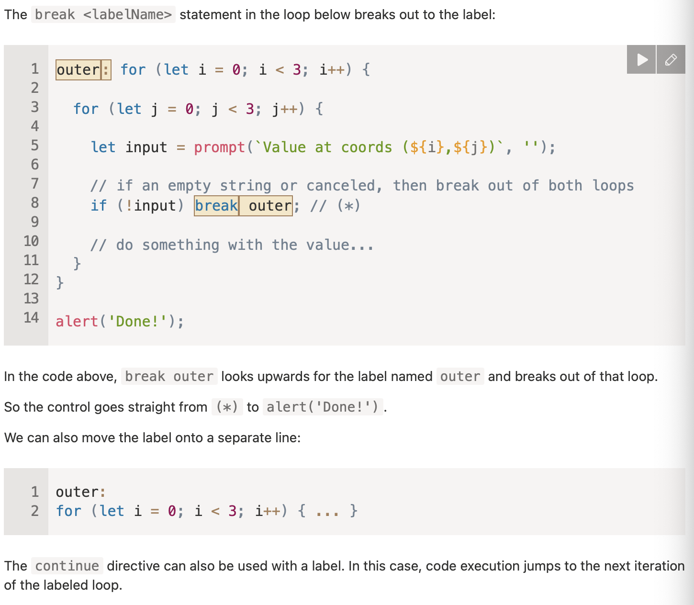
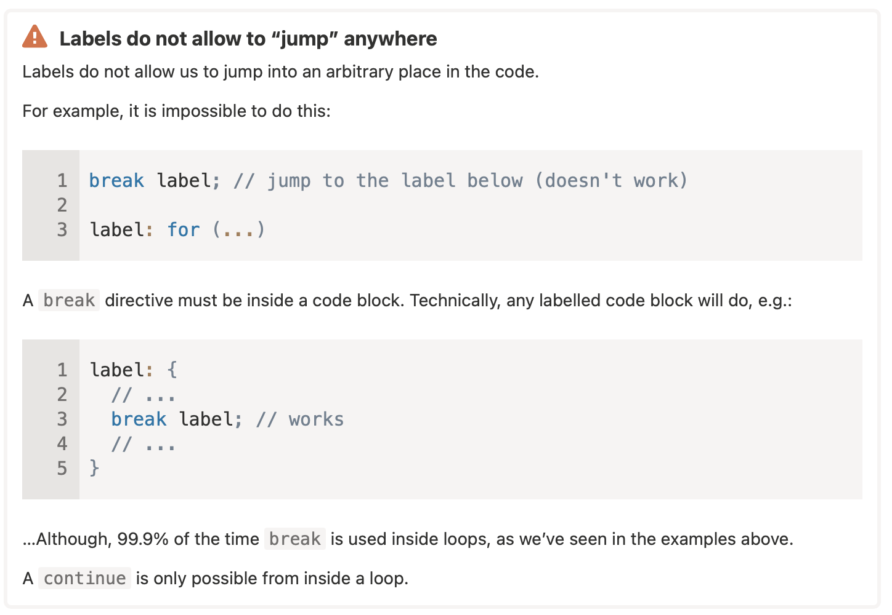

Loops and Arrays
- Note that map() and filter() are both often used with function expressions
- the code inside a do...while loop is always executed at least once. That's because the condition comes after the code inside the loop.
- (i > 5) ? alert(i) : continue; // continue isn't allowed here. This will raise a syntax error in ternary operations.

- YOU CANNOT just jump anywhere using labels in JS!!

- We cannot access the last item in an array using -1 index, that doesn't work in JS, we must calculate it using [arr.length - 1]
- Methods for queue: .shift(), .push()
- Methods for stack: .push(), .pop()
- If one of the arguments of == is an object, and the other one is a primitive, then the object gets converted to primitive, as explained in the chapter Object to primitive conversion.
- DO NOT USE == TO COMPARE ARRAYS